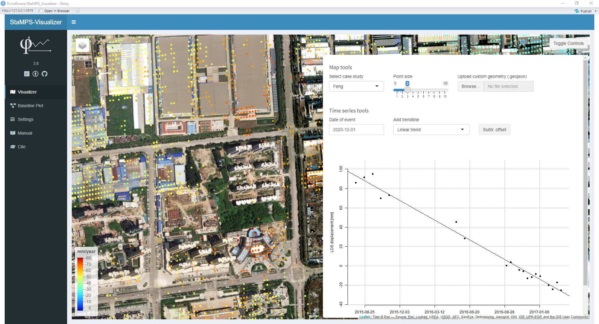
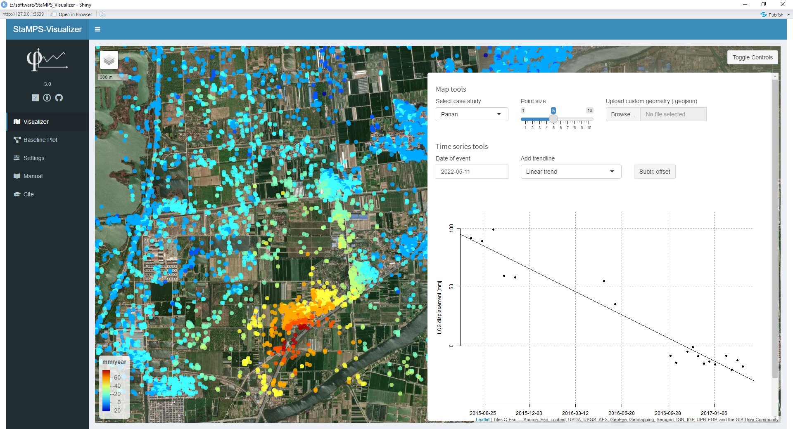
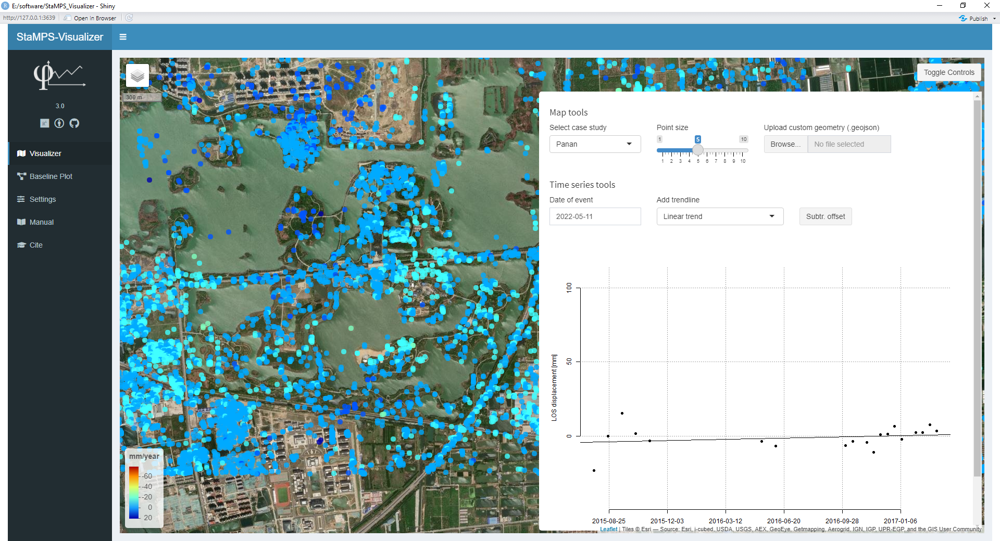
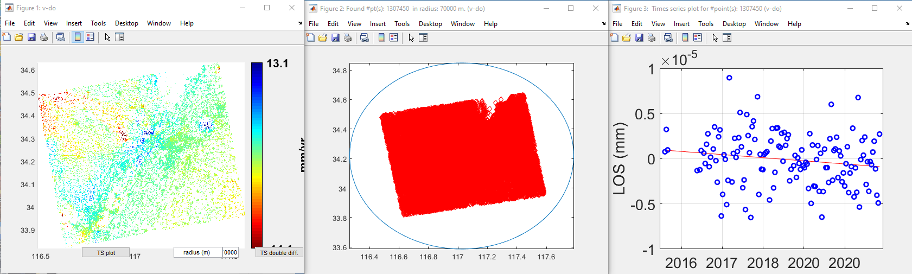

Post-StaMPS Analysis in Xuzhou
Intro
StaMPS-Visualizer
A Shiny application for visualizing DInSAR results processed by StaMPS/MTI1.
Who wants to use this2?
If you want to visualize your StaMPS processed data to explore it in a much more comfortable way (my opinion) as in the Matlab plots, you can use these application.What to do
install R 244 and RStudio 184
Download and unzip this file stamps_visualizer_01beta.zip 96 (476.4 KB)
launch RStudio and open the install_packages.R script in the extracted folder
run the whole script (select all lines in the script and press strg+enter), this will install some packages and take some time
open the ui.R script in the upper left window you find a Run app button, the first time you will be asked if the shiny package should be installed, click yes and wait. The app should launch after that, if this does not happen, quit Rstudio launch it again and hit Run app again.
In the opened app you will find four panel options at the top TS explorer, TS comparison, Manual and Cite. Read Cite and Manual to get familiar with the app (its very easy) and have fun exploring the example and your own StaMPS data when imported :slight_smile:
StaMPS/MTI-Visualizer 2.0 Manual
TS Explorer
In the Single TS Selection panel you can choose a case study. The map is automatically adjusted to show the data of the case study. In the map, you can click on each marker (colored points) and a plot of its deformation time series will be plotted in the Single TS Selection panel.
The number of the selected point is also shown below the plot, this number may be interesting for use in TS Comparison.
To add a vertical line of an event of interest to the TS plot choose a date within the time line of the TS plot.
Adding Costume Case Study Data
To explore and plot costume data, you have to export a dataset from StaMPS/MTI-Matlab in a specific .csv table, create a folder with the name of the case study in the stusi folder of the application and put the .csv table in this folder. After that, reload StaMPS/MTI-Visualizer to choose the new dataset.
To prepare the dataset in StaMPS/MTI-Matlab run your process in Matlab until step 6 or further. Create a ‘ts’ plot where you choose a region of interest you want to export. I recommend a search radius of 500m but this depends on point density and study site. If you have trouble because of an error telling something about different dimension during the export, use a search radius that is large enough to fit all your PS in it. We can use this huge table later in R and make a subset there which is easier. In both cases, this action will create some needed objects in Matlab. Which ps_plot you create depends on you, ‘V-DO’, ‘V-D’, ‘V-O’ etc. but be sure that you repeat the same plot without ‘ts’ but with -1 argument after that, see line 1, 3 and 4 in the chunk below. In this example the ‘v-do’ argument must be the same in all lines, adapt it to your chosen method. Additional data is prepared in this step, similar to the googleearth-kml export in StaMPS/MTI.
The last adaption is optional, you can change the name of the outpufile.csv in the last line. The file will be written into your SMALL_BASELINES directory. After the export, move the .csv file to your case study folder in stusi directory of the StaMSP-Visualizer application.
1 | |
If the export is not a subset of some measurement points but all points, because you encountered errors during exporting and set the search radius very high, use this R script to spatially subset the csv. table afterwards:
1 | |
TS Comparison
After you have explored your points, you might want to compare some of the single time series. During exploration you can see the point number after you have clicked on a marker on the map. Note your points of interest and change to TS Comparison here you can compare up to five time series, by choosing the case study and the numbers of points you have noted.
Error 1
1 | |
Solution
sorry, I was a bit imprecise. First when you execute the ps_plot with ts option, you have to select a really large radius which includes all measurement points of your processed data, which results in a really large csv table which you have to export using the usual way, the error will not occur, because no subset is made and all points are used to create the table…therefore no uneven objects can be created. Using this table, the work around in R described in the manual, can be used to subset the points of interest outside Matlab to avoid the error you have been encountered, what you need is an additional polygon which describes the area you are interested in. I suggest to create it in google earth and export it in the .kml format. It is even possible to load the large csv table into StaMPS-Visualizer, but your computer will have to do a lot of rendering to display all points within the csv table…
Hence, you do not have to weed your points4.
Error 2
1 | |
Solution
Thank you and I’m sorry for late reply.
I try to change (delete “.”) in your R script, turns out it works. I try to adapt it with my.csvexport result.in command for #create spatial object, I delete “.” to adapt with my
.csvexport result5.
Original Script:
1 | |
Modified Script:
1 | |
Hmm for some reason, in the
.csvtables which I provide within the visualizer the “.” is needed…Will check this again, when I work on it next time, thanks for mentioning6!
Error 3
1 | |
Solution
There seems to be a mistake in line 23 (I know you copy pasted it from the manual of the application from github or the online example, I have fixed it there too)
use:
1 | |
Explanation: sub is not an object created by the script containing a data.frame but a function called sub (which is an object too). the function write.table() awaits a data.frame like object in x as input, this explains the error message. It maybe that I first worked with an object called sub, when I wrote the script but then changed sub to sub.csv, to avoid logical conflicts with the function sub…nice style be me but bad implemented by forgetting to rename all sub objects. Thanks for the report7.
Manual
- Process StaMPS until step 6 or further3
- Use the following lines in Matlab to export the data. Run the code line by line and follow the instructions in the comments
Import custom StaMPS data
After the export from Matlab/StaMPS was successful, the .csv table can be imported to the Visualizer:
move the .csv file to th StaMPS_Visualizer/input/stusi directory
open or restart the app
now the new study site can be selected in the Visualizer control panel
If you encounter a pop up error message after you have selected your import, follow the instructions of in the message.
Export custom data from SNAP (baseline plot)
Create a coregistered stack product (InSAR stack) in SNAP. Be sure that the prime image is the first in the stack!
in SNAP go to View –> Tool Windows –> Radar –> InSAR Stack and choose the Baseline Chart tab
Copy the chart to clipboard (on right side the upper icon)
open a text editor and paste the chart
delete all white spaces and exchange the ? in the first row to be a 0 (zero)
when you use Linux, save chart info to a .csv file and use this: sed -i 's/?/0/g' <file_with_chart_info.csv> | sed 's/ //g'
save the resulting table as <name>.csv
Import custom baseline plot data
move the .csv file to th StaMPS_Visualizer/input/baseline_info directory
open or restart the app
now the new baseline chart can be selected in the Baseline Plot tab
Result of Feng.kml
Create Feng.kml in google maps and use subset_ts_plot_export.R to subset all PS points within roi.

Result of Panan.kml
Create Panan.kml in google maps and use subset_ts_plot_export.R to subset all PS points within roi.


StaMPS -> Visualizer -> ArcGIS/QGIS
Research question: How to convert StaMPS result into a tiff or other coordinate files?
Regarding StaMPS results, if you plan to go to a GIS system it should be immediate or simpler to export in
csvfile and then import in the GIS and from there, if desired do the conversion to tiff… That is what I do when I want to work with the results into GIS8.
You can also find an explanation here StaMPS_Visualizer. Visist the repository on Github, launch the
StamPS-VisualizerExample and go the the Manual tab, here is a description how to export the data you are looking for ascsvtable fromMatlaband useRto build a spatial object from it. From there you can export it to any format you would like to have9.
StamPS result to csv file
Set radius 70000m
1 | |

1 | |
File exported to dir H:\StaMPS_LiDO_result\Xuzhou_city_new\stamps_tsexport.csv
This csv file is used to import to StaMPS_visualizer. In order to import to ArcGIS Online, metarow in stamps_tsexpoer.csv file must be deleted, cause it is not readable in Map view.
Run writetable(export_res,'stamps_tsexport_d2.csv') in matlab instead of write metarow in csv file. Result is saved in dir H:\StaMPS_LiDO_result\Xuzhou_city_new\stamps_tsexport_d2.csv
Details of stamps_tsexport.csv
What does each row and columns mean in exported csv file?
the csv chart is structured like this12:
row 1 header
row 2 col 1 and 2 lon lat of your ref point
row 2 col 3 NaN to fill this cell
row 2 col 4:ncol the dates in days from 0 of the measurement, will be converted in stamps visualizer in yyyy-mm-dd. Numbers13 can be converted to human-read date in EpochConverter
row 3 col 1 an 2 lon lat of measurement point (MP)
row 3 col 3 mean velocity of MP
row 3 col 4:ncol displacement value of MP
Import csv to ArcGIS
You can use spreadsheet data stored in a comma-separated values (CSV) text file (
.csv) or data stored in a delimited text file (.txt) or GPS Exchange Format file (.gpx) in ArcGIS Online. The following list summarizes how you can use these files and provides links to instructions. The sections after the functionality list provide information on proper formatting and tips for using CSV, TXT, and GPX files in your ArcGIS Online organization10.
- Add CSV, TXT, or GPX files to your map. Map Viewer Classic adds the location information, draws features on the map for each item in the file, and stores the information in the map as a layer. Once you’ve added your file to the map, you can edit the properties of the layer that is created. For example, you can configure pop-ups, change symbols, set the visibility range, enable editing, and remove pop-ups.
Publish hosted feature layers
If your
CSVfile, shapefile, orGeoJSONfile contains a large amount of data, or you want to create a layer that you can reuse in multiple maps, you can publish a hosted feature layer instead of adding the file to the map.
Publish a CSV file
To web enable feature layers from
CSVfiles, you upload them to ArcGIS Online and have them hosted as services. These services are referred to as hosted feature layers. This is a useful workflow if you do not have any ArcGIS products installed locally11. Features are published in theWGS 1984Web Mercator (Auxiliary Sphere) coordinate system.
Important
Before publish, stamps_tsexport.csv file need to be modified. Open with MS Execl and delete row 2 then save.
-
Open Content > My Content, click New item, and click Your device.
-
Find the file on your device.
-
Select the file and click Open.
-
Choose Add
stamps_tsexport_d2.csvand create a hosted feature layer or table. -
Click Next.
-
Review the fields included and make changes as needed. If the field types can be identified, they are set automatically. You can remove fields, change the display name of the field, and change the field type.
export_res_1toLongitude,export_res_2toLatitude. -
Choose a Time Zone for the date fields in your CSV file.
-
Click Next.
-
Choose the information in your file that ArcGIS Online should use to locate features.
-
Optionally, type tag terms separated by commas.
-
Optionally, type a summary that describes the data.
-
Click Save.
Import csv to QGIS
Many times the GIS data comes in a table or in a spreadsheet. QGIS allows you to import structured text files with coordinates as a vector layer. This tutorial shows how you can use the Data Source Manager to import Delimited Text files14.
-
Click the
Open Data Source Managerbutton on the Data Source Toolbar. You may also useCtrl + Lkeyboard shortcut. -
In the Data Source Manager dialog box, switch to the
Delimited Texttab. Click the … button next to the File name. -
By default
Xfield andYfield values will be auto-populated if it finds a suitable name field in the input. In our case, they areexport_res_1andexport_res_2. -
You may change it if the import selects the wrong fields. You can leave the Geometry CRS to the default
EPSG:4326 - WGS 84 CRS. -
Add Basemap. In the browser panel, locate the Tile Server entry and right click it to add a new service, double click
Open Street Map.